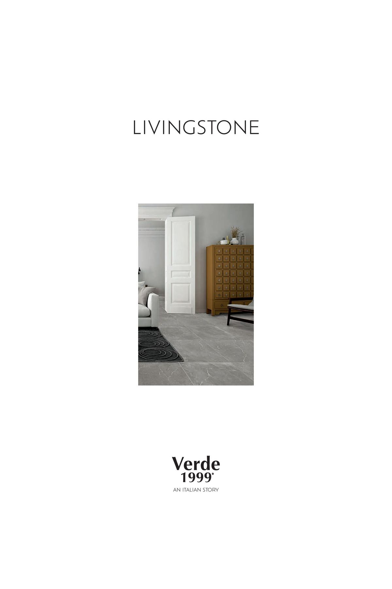

Cotto-Fliesen
Pflege für Terrakotta
Cotto-Fliesen sind ein Naturprodukt mit offenporiger Oberfläche. Um ihre Schönheit zu erhalten und vor Flecken zu schützen, empfehlen wir folgende Pflege:
- 01 Grundreinigung — Nach der Verlegung mit Lithofin Zementschleierentferner reinigen
- 02 Imprägnierung — Lithofin Fleckstop oder MN Fleckstop auftragen (2 Schichten)
- 03 Wischpflege — Lithofin MN Wischpflege für die regelmäßige Reinigung
- 04 Auffrischung — Imprägnierung alle 2–3 Jahre erneuern

Feinsteinzeug
Pflege für Feinsteinzeug
Feinsteinzeug ist deutlich pflegeleichter als Cotto oder Naturstein. Die dichte, geschlossene Oberfläche macht eine Imprägnierung überflüssig.
- ✓ Keine Imprägnierung nötig
- ✓ Warmes Wasser + milder Reiniger genügt für die tägliche Reinigung
- ✓ Säurebeständig — keine Gefahr durch Wein, Zitrone oder Essig
- ✓ Fugen können bei Bedarf separat imprägniert werden
Allgemeine Tipps
Dos & Don'ts
Richtig machen
pH-neutrale Reiniger verwenden. Regelmäßig feucht wischen. Verschmutzungen zeitnah entfernen. Fußmatten im Eingangsbereich auslegen.
Vermeiden
Keine säurehaltigen Reiniger auf Cotto. Kein Scheuerpulver. Keine Dampfreiniger auf frisch imprägnierten Flächen. Keine Stahlwolle.
Profi-Tipp
Bei hartnäckigen Flecken auf Cotto: Lithofin Fleckentferner punktuell auftragen, einwirken lassen und mit klarem Wasser nachwischen.
Häufige Fragen
FAQ zur Fliesenpflege
Ja, Cotto-Fliesen sollten nach der Verlegung mit Lithofin imprägniert werden. Dies schützt die offenporige Oberfläche vor Flecken und Feuchtigkeit, ohne die Atmungsaktivität zu beeinträchtigen.
Nein, Feinsteinzeug ist werkseitig so dicht gebrannt, dass keine Imprägnierung erforderlich ist. Einfache Reinigung mit warmem Wasser und einem milden Reiniger genügt.
Verwenden Sie für die regelmäßige Reinigung einen pH-neutralen Reiniger und warmes Wasser. Vermeiden Sie säurehaltige Reiniger, da diese die Imprägnierung angreifen können. Lithofin MN Wischpflege ist ideal für die tägliche Reinigung.
Je nach Beanspruchung empfehlen wir eine Auffrischung der Imprägnierung alle 2–3 Jahre. In stark genutzten Bereichen wie Küchen oder Eingangsbereichen kann eine jährliche Auffrischung sinnvoll sein.
Ja, Outdoor-Feinsteinzeug verträgt Hochdruckreiniger problemlos. Halten Sie einen Mindestabstand von 30 cm und verwenden Sie einen Flächenreiniger-Aufsatz für ein gleichmäßiges Ergebnis.
Noch Fragen?
Wir beraten Sie gerne
Bei Fragen zur Pflege oder Imprägnierung stehen wir Ihnen persönlich zur Verfügung. Rufen Sie uns an oder schreiben Sie uns.